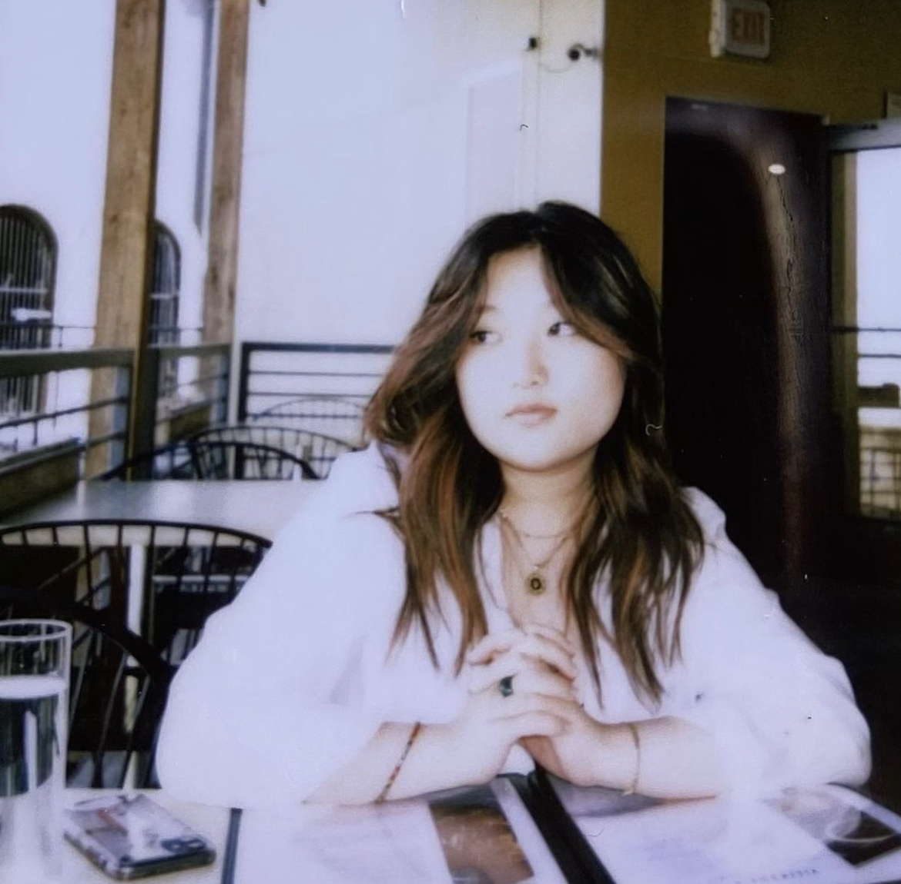

Contact
1241 Frost Pl.
Harrisonburg, VA 22802
Skills & Specialties
Languages
English, Korean
Servers & Operating Systems
Windows, Mac
Applications
Adobe Creative Cloud (Lightroom, Premiere Pro), Microsoft Office (Word), Google (Drive, Photos, Sheets, Slides)
Education
Media Arts and Design - BA Major Interactive Design Concentration
James Madison University, Harrisonburg, VA
- August 2020 - present
- 15 credits completed in SMAD
- GPA 3.070/4.0
Asian Studies Minor
James Madison University, Harrisonburg, VA
- August 2020 - present
- 6 credits completed in Asian Studies
- GPA 3.070/4.0
Sociology Minor
James Madison University, Harrisonburg, VA
- August 2020 - present
- 3 credits completed in Sociology
- GPA 3.070/4.0
Experience
Graphic design
Instagram, Facebook, Twitter - @ActionForum
- June 2020 - July 2020
- Graphic designer, outreach team, research team, and writing team
- Created informational graphics
- Strategies to grow a social following
- Find story contents
- Creator of @actionforum petition Action Forum Petition, Article on Action Forum
Instagram - @TheAsianArticles
- August 2020 - October 2020
- Creates designs for all Instagram posts and other graphics that may be needed
- Must make designs consistent with the aesthetics and branding of The Asian Articles
- Preferably versed in Canva and other design software
- Graphic design for Improvathon 86 promotional poster
Cavalier Theatre
Digital Video & Cinema
Dalton Wedding Video (2021)
- Filming, Directing, and post-production of a wedding montage
- Editing raw footage of ceremony
Cavalier Theatre (2017-2020)
- Missed the Boat (cinematographer) - VHSL Film Festival 2nd place
- Let Go (writer / cinematographer / director / editor)
- Sheriff of Puddington (cinematographer)
- The History of Jom Tones (cinematographer / writer / director / editor)
- Promotional videos for the Blue Ridge Area Food Bank fundraiser
- Promotional video for the Blue Ridge Area Food Bank
- Promotional videos for Footloose, The Musical
- Promotional videos for Disaster!, The Musical
- All promotional videos can be found on @cavaliertheatre on Instagram
- Animation for @benben.son on Tiktok
- Created and designed an animation to be used as a profile video and Youtube Intro
- Animation for UVA
- Worked under a contract with Ben Benson in order to create an animation tutorial for an upcoming app